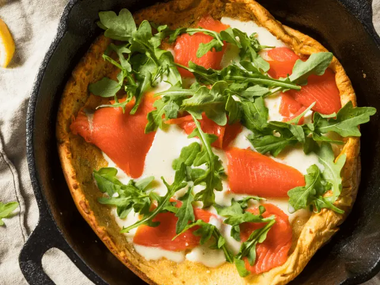
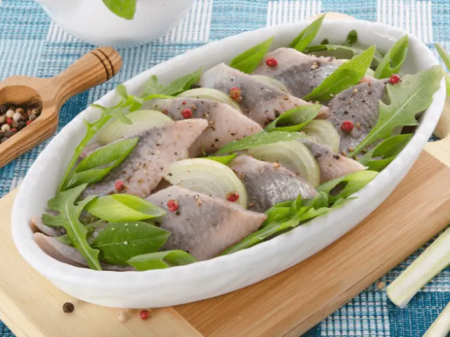
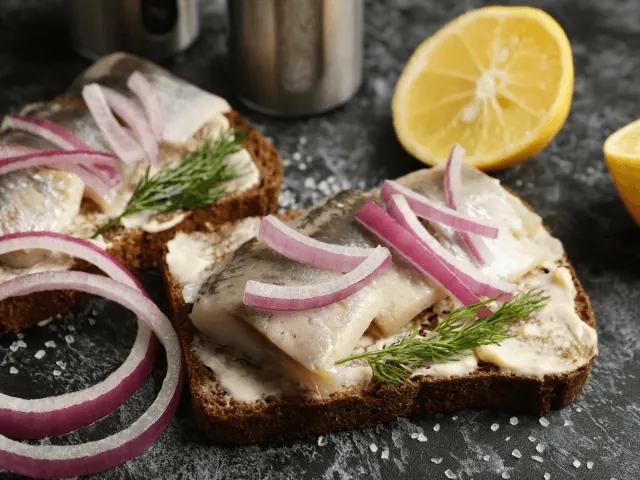

Geniet van de Hollandse Pot in Deze Nederlandse Restaurants in Nijmegen
Gepubliceerd op 21 februari 2023, bijgewerkt op 20 oktober 2023
Onderdeel van de gids Restaurants in Nijmegen

De meeste Nederlanders zijn geïnteresseerd in de culinaire hoogstandjes van diverse internationale keukens. Echter vergeten we vaak dat ook ons eigen kikkerlandje beschikt over een veelzijdige keuken. De Hollandse keuken wordt grotendeels gekenmerkt door ons landbouwverleden. Toch heeft iedere streek zo zijn eigen specialiteiten. De Nederlandse keuken wordt bovendien beïnvloed door veel andere Europese keukens. Van stamppot tot snert en van pannenkoeken tot Goudse kaas, onze keuken heeft enorm veel te bieden.
Ben jij op zoek naar een restaurant in Nijmegen met diverse Nederlandse specialiteiten? Dan is restaurant Moeke absoluut een aanrader. De gemoedelijke sfeer en het veelzijdige menu zijn onder velen favoriet. Ook restaurant Claudius en eetcafé Goed Volk in Nijmegen zijn absoluut een bezoekje waard. Hoogwaardige streekproducten en prachtige gerechten, dat is wat je van deze restaurants mag verwachten.
Ben jij benieuwd welk Nederlands restaurant in Nijmegen het meest geschikt is voor jou? Dan raden wij je aan om het onderstaande artikel grondig door te nemen. We bespreken namelijk verschillende restaurants in Nijmegen, waar jij optimaal van de Nederlandse of Hollandse keuken kunt genieten. Wij weten zeker dat er ook voor jou een heerlijk restaurant tussen zit. Of je nu alleen dineert of met een hele groep vrienden, in Nijmegen zit je altijd goed!
Overzicht Nederlandse restaurants in Nijmegen
Probeer deze Nederlandse restaurants in Nijmegen
De Nederlandse keuken moet absoluut niet onderschat worden. In de onderstaande restaurants kun je heerlijk genieten van veel verschillende Hollandse gerechten. Zowel vegetariërs als vleeseters kunnen een plekje vinden in het prachtige Nijmegen. Graag duiken we iets dieper in op enkele van onze favoriete Nederlandse hotspots in Nijmegen.
Restaurant Moeke Nijmegen
Het eerste restaurant dat we graag nader willen bekijken is Moeke. Restaurant Moeke ligt in het noordelijke deel van Nijmegen. Dit restaurant is geliefd vanwege de uitermate huiselijke sfeer. Alles mag en niets moet bij restaurant Moeke!
Zowel heerlijk lunchen als uitgebreid dineren is mogelijk in dit sfeervolle restaurant. De menukaart is enorm uitgebreid. Van uitsmijters rond het middaguur tot een heerlijke burger of prachtig stukje vis tijdens het diner, de mogelijkheden zijn groots. Ook vegetarische gerechten zijn aanwezig op de veelzijdige menukaart.
Of je nu een zakelijke lunch of familiediner organiseert, bij Moeke is iedereen van harte welkom!

New Dutch Streetfood
In het centrum van Nijmegen vind je de fantastische tent New Dutch Streetfood. Het is de ideale plek om na een dagje Nijmegen ontdekken, heerlijk te ontspannen. Deze lunchroom is al jarenlang een begrip in hartje Nijmegen.
Of je nu binnen of op het gezellige terras wenst plaats te nemen, jij gaat hoe dan ook genieten van de veelzijdige menukaart. Verschillende sandwiches met heerlijke toppings zijn favoriet onder de reguliere klanten. Combineer je gerecht met een heerlijk drankje, en jouw avond kan niet meer stuk.
De sfeer in deze eettent is absoluut opmerkelijk. Chic maar toch enorm huiselijk, wij weten zeker dat jij je hier binnen no-time thuis zal voelen.

Restaurant Claudius
Nog een heerlijke plek om culinair te genieten in het centrum van Nijmegen, is restaurant Claudius. De ietwat romantische sfeer in dit restaurant is absoluut opmerkelijk. Het eten is niet alleen uitzonderlijk hoog in kwaliteit, de gerechten zijn ook een lust voor het oog. Het is de ideale plek voor een romantisch diner.
De Nederlandse- of Hollandse keuken wordt in dit restaurant gecombineerd met diverse andere Europese keukens. Er is dus werkelijk waar voor ieder wat wils verkrijgbaar. Ook een uitgebreid wijnassortiment ontbreekt uiteraard niet.
Van een voorgerecht tot een uitgebreid dessert, bij restaurant Claudius geniet je van een compleet verzorgd diner. Het gebruik van uitsluitend de beste ingrediënten resulteert in de meest unieke gerechten van hoge kwaliteit.
Het uitermate vriendelijke personeel van restaurant Claudius zorgt ervoor dat gasten keer op keer terugkomen.

Goed Volk
De laatste aanrader op onze lijst is eetcafé Goed Volk. Deze eetgelegenheid vind je in de wijk Bottendaal in Nijmegen. Dit eetcafé heeft een ongedwongen sfeer waar je heerlijk kunt ontspannen, terwijl je geniet van een simpele borrel of een uitgebreid diner.
Goed Volk kenmerkt en onderscheidt zich met het gebruik van lokale en biologische producten. Zowel vegetariërs als vleeseters kunnen hun geluk niet op in dit hoogwaardige eetcafé. De menukaart wisselt bovendien wekelijks, wat ervoor zorgt dat je telkens weer verrast wordt wanneer je bij Goed Volk gaat eten.
Wist je dat sommige gerechten uit de keuken van Goed Volk ook afgehaald kunnen worden, zodat je er thuis heerlijk van kunt genieten? We kunnen dus wel stellen dat restaurant Goed Volk van alle markten thuis is.